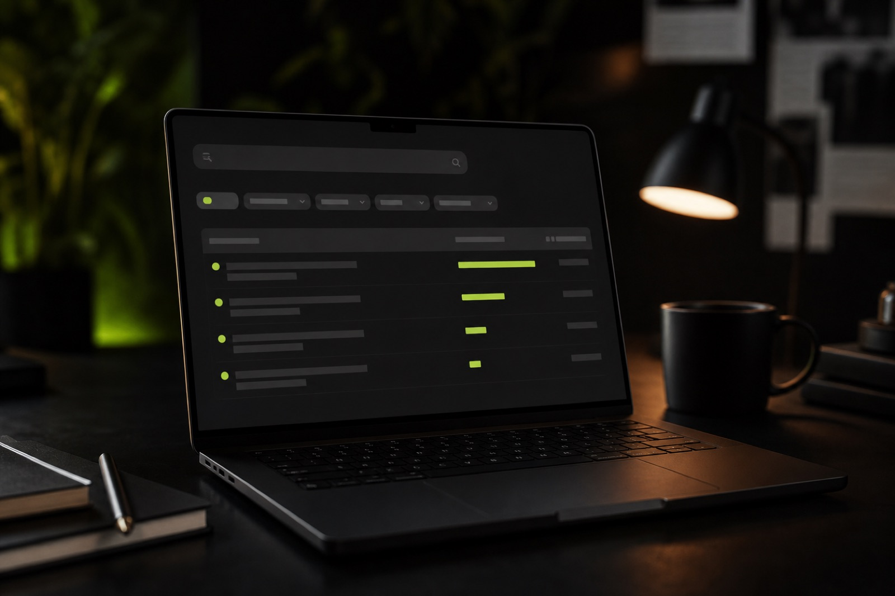

Denizli'de faaliyet gösteren bir markaysanız, doğru reklam ajansı seçimi dijital büyümenizin temelini oluşturur. Google'da "denizli reklam ajansı" araması yaptığınızda onlarca sonuç görmeniz normal; asıl mesele hangi ajansın hedeflerinize, sektörünüze ve ölçümleme beklentinize uygun olduğudur.
Genua olarak 2022'den bu yana Denizli merkezli kamu kurumları ve kurumsal markalarla çalışırken, ajans seçiminde en çok sorulan kriterleri bu rehberde topladık.
1. Referans ve sektör deneyimi
Denizli reklam ajansı adaylarının portföyünde sizin sektörünüze yakın projeler olup olmadığına bakın. Kamu kurumları, sağlık, perakende veya B2B farklı iletişim dili gerektirir. Referansların yalnızca görsel değil, hedef ve sonuç bağlamıyla anlatılması önemlidir.
2. Hizmet kapsamının bütüncül olması
Sadece sosyal medya paylaşımı yapan bir ekip ile dijital reklam, kreatif, web ve SEO'yu birlikte yöneten bir ajans aynı sonucu vermez. Markanız büyüdükçe parçalı hizmet almak maliyet ve tutarlılık sorunu yaratır. Hizmet kapsamını baştan netleştirin.
3. Performans raporlama disiplini
Denizli reklam ajansı seçerken "ne yaptık?" değil "ne kazandırdık?" sorusuna yanıt veren raporlama isteyin. Google Ads, Meta Ads ve organik kanallarda KPI'ların düzenli paylaşılması şeffaf bir iş ortaklığının göstergesidir.
4. Yerel ekip ve iletişim erişilebilirliği
Uzaktan çalışma yaygın olsa da yüz yüze briefing, stüdyo çekimi ve acil kampanya müdahalesi için Denizli'de fiziksel ofisi olan bir ajans avantaj sağlar. Genua'nın Merkezefendi ofisi ve Yenişehir stüdyosu bu ihtiyaca yöneliktir.
5. Kreatif üretim kapasitesi
Reklam metni ve görseli dış kaynaklara bağımlı olmadan üretebilen ekipler kampanya hızını artırır. Fotoğraf, video, motion ve sosyal medya kreatiflerinin aynı marka diliyle hazırlanması tutarlılık sağlar.
6. Web sitesi ve SEO altyapısı
Bir ajansın kendi sitesinin hızlı, mobil uyumlu ve arama motorlarına açık olması güven sinyalidir. Ayrıca sizin web projenizde teknik SEO, schema markup ve dönüşüm odaklı landing page deneyimine sahip olmaları kritiktir.
7. Bütçe şeffaflığı ve sözleşme netliği
Medya bütçesi ile ajans hizmet bedelinin ayrıştırıldığı, kapsamın yazılı olduğu teklifler uzun vadede sürpriz maliyetleri önler. Denizli reklam ajansı tekliflerini karşılaştırırken yalnızca fiyata değil teslim kapsamına odaklanın.
Sonuç: Denizli'de doğru ajans ortağı
Denizli reklam ajansı arayışınızda referans, bütüncül hizmet, raporlama ve iletişim dört temel filtredir. Genua; dijital reklam, sosyal medya, marka, içerik, SEO ve web alanlarında Denizli merkezli ekip ve Türkiye geneli proje deneyimiyle bu kriterleri karşılayacak şekilde çalışır.